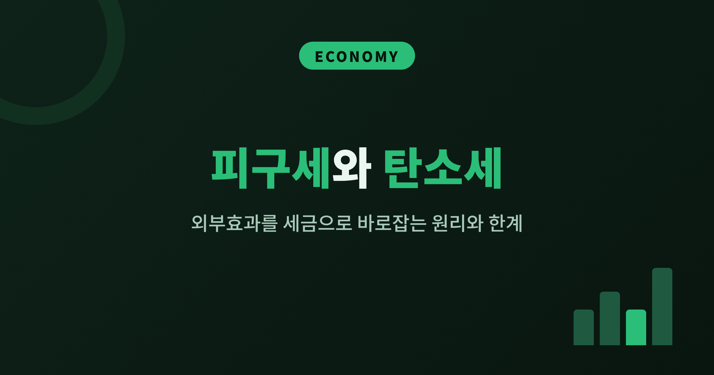
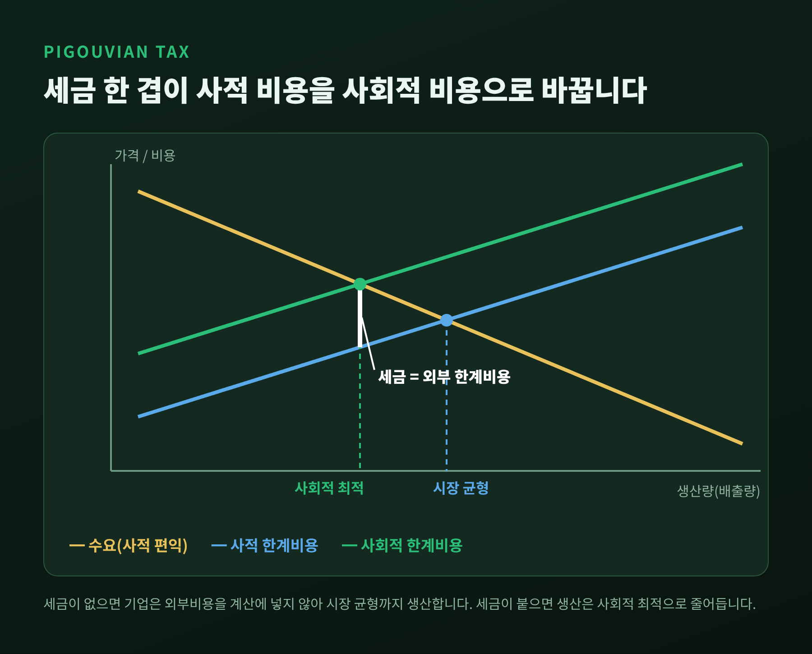
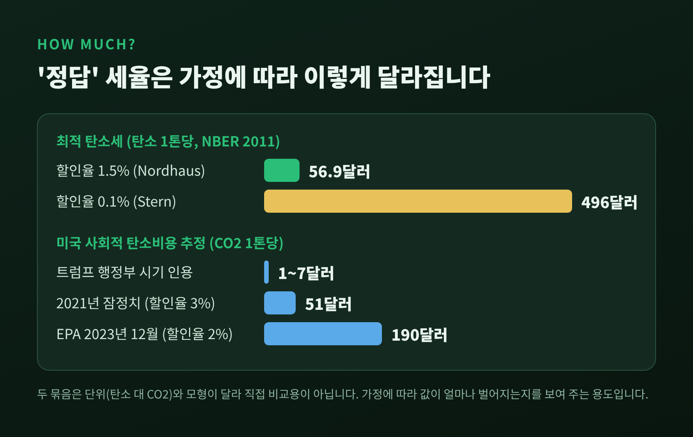
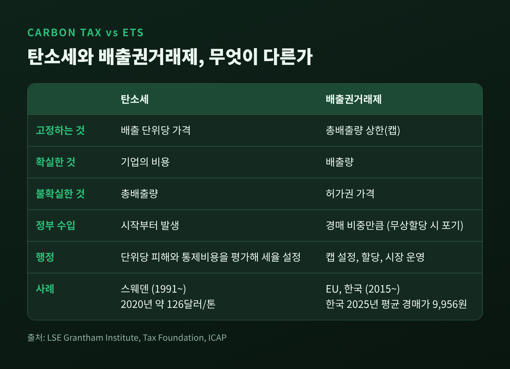
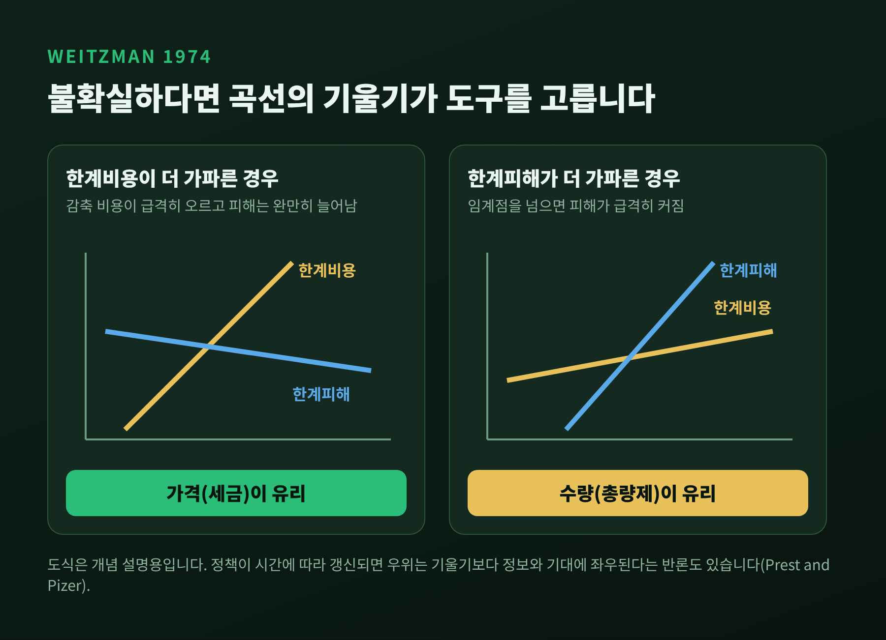
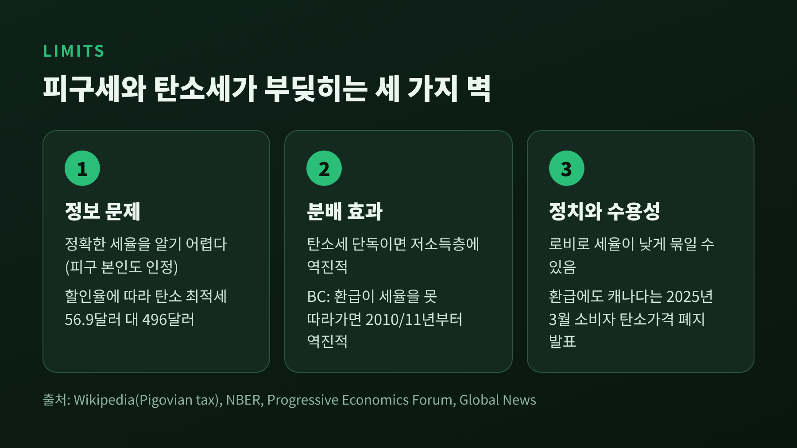

이번 글에서는 피구세와 탄소세를 정리해 보겠습니다. 피구세는 오염처럼 남에게 떠넘기는 비용을 세금으로 가격에 얹어 시장을 바로잡는 방법이고, 탄소세는 그 원리를 온실가스에 적용한 것입니다. 세율을 어떻게 정하는지, 배출권거래제와 무엇이 다른지, 어디서 한계에 부딪히는지를 차례로 살펴보겠습니다.
피구세의 뿌리는 영국 경제학자 아서 세실 피구가 1920년에 펴낸 《후생경제학》입니다. 피구는 생산자가 사적 이익만 따질 뿐 사회가 치르는 비용은 계산에 넣지 않는다고 보았습니다. 그는 이것을 "부수적으로 청구되지 않는 해악"이라 불렀습니다. 붐비는 동네에 들어선 공장이 혼잡과 채광 손실, 주민의 건강 악화를 낳는 경우가 대표적인 예입니다.
공장 입장에서 연기 비용은 0원입니다. 그래서 사회가 원하는 수준보다 더 많이 생산하고 더 많이 배출합니다. 피구세는 이 빈칸에 가격표를 붙입니다. 배출 한 단위에 세금을 물려, 기업이 느끼는 비용(사적 비용)을 사회가 실제로 치르는 비용(사회적 비용)에 맞추는 것입니다.

핵심은 방식에 있습니다. 규제가 "이만큼만 배출하라"고 명령한다면, 피구세는 "배출하고 싶으면 값을 치르라"고 말합니다. 감축 비용이 싼 기업은 줄이고, 비싼 기업은 세금을 내며 배출을 유지합니다. 같은 감축량을 더 싸게 달성하는 길이 열리는 셈입니다.
이론이 말하는 최적 세율은 단순합니다. 세금이 해악이 낳는 외부 한계비용과 같으면 됩니다. 그러면 사적 비용과 사회적 비용이 일치해 과잉 생산이 사라집니다. 배출량 자체에 과세하면 생산을 줄이는 쪽으로, 생산 단위당 배출량에 과세하면 더 깨끗한 기술을 쓰는 쪽으로 유인이 움직입니다. 배출 대신 생산량 같은 대리 지표에 과세하면 효율적인 결과가 나오지 않을 수 있다는 점도 함께 기억할 만합니다.
문제는 그 숫자가 얼마냐는 것입니다. 골로소프, 하슬러, 크루셀, 칩신스키가 2011년 NBER 논문에서 계산한 탄소의 최적세는 할인율에 따라 극적으로 달라집니다. 노드하우스식 할인율 1.5%에서는 탄소 1톤당 56.9달러, 스턴식 0.1%에서는 496달러입니다. 같은 모형에 같은 피해를 넣었는데 미래를 얼마나 가볍게 보느냐에 따라 값이 약 9배 벌어집니다.
미국 정부의 사회적 탄소비용 추정도 비슷합니다. 트럼프 행정부 시기에는 톤당 1~7달러가 인용됐습니다. 2020년 배출분 기준으로 2021년 잠정치는 51달러(할인율 3%)였고, 2023년 12월 EPA 보고서는 190달러(할인율 2%)를 제시했습니다. 이 수치들은 서로 다른 시점과 가정을 둔 추정이라 단순 비교에는 주의가 필요하지만, 세율의 '정답'이 얼마나 넓은 범위에 걸쳐 있는지는 분명히 보여 줍니다.

한 가지 흥미로운 대목이 더 있습니다. 같은 논문은 피해가 크지 않은 경우와 파국적인 경우를 나눠 보았습니다. 파국이 일어날 확률을 6.8%로 두면, 1.5% 할인율에서 톤당 세금은 피해가 작을 때 25.3달러, 파국일 때 489달러입니다. 불확실성이 큰 동안 정책은 기대 피해를 기준으로 삼고, 정보가 쌓이면 세율을 조정하는 것이 합리적이라고 논문은 설명합니다.
같은 목표를 향하는 두 도구는 무엇을 고정하느냐에서 갈립니다. 탄소세는 배출 단위당 가격을 정해 두므로 기업의 비용은 예측할 수 있지만 총배출량은 정해지지 않습니다. 배출권거래제는 총량의 상한을 먼저 정하고 허가권을 거래하게 하므로 배출량은 확실하지만 허가권 가격은 출렁입니다.

어느 쪽이 낫느냐는 마틴 와이츠먼이 1974년에 던진 질문입니다. 그의 결론은 한계비용 곡선과 한계피해 곡선의 상대적 기울기에 달려 있다는 것입니다. 한계비용 곡선이 한계피해 곡선보다 가파르다면, 즉 감축 비용은 가파르게 오르는데 피해는 완만하게 늘어나는 문제라면 가격 수단(세금)이 유리합니다. 반대로 한계피해 곡선이 더 가파른 문제, 이를테면 임계점을 넘으면 피해가 급격히 커지는 경우에는 총량을 못 박는 수량 수단이 안전합니다.

다만 이 조건은 정책을 한 번 정해 놓고 바꾸지 않는다는 가정 위에 서 있습니다. RFF의 프레스트와 파이저는 정책을 시간에 따라 갱신하고 허가권을 기간 간에 거래할 수 있다면 우위가 '기울기가 아니라 정보와 기대'에 좌우된다고 보았습니다. 이론이 한 줄로 정리되지 않는다는 뜻입니다.
현실에서도 양쪽의 약점은 뚜렷합니다. EU 배출권거래제는 1기에 허가권 가격이 거의 0에 가깝게 떨어져 개혁을 거쳤습니다. 2018년에는 시장안정화예비분을 강화하고 취소 메커니즘을 넣었고, 그해 가격은 톤당 10유로 미만에서 20유로를 넘는 수준으로 올랐습니다(ZEW 집계). 탄소세는 세율을 정치가 정하다 보니 낮게 묶이기 쉽습니다. 스웨덴이 1991년 도입 이후 세율을 꾸준히 올려 2020년 톤당 약 126달러에 이른 사례가 자주 거론되는 까닭입니다. 그마저도 국내 온실가스의 약 40%만 포괄하고, EU 배출권거래제 대상 산업은 면제됩니다.
그럼에도 학계의 무게추는 세금 쪽에 기울어 있습니다. 2018년 설문에서 주요 경제학자의 58%는 탄소세가 배출권거래제보다 낫다고 답했고, 반대한 사람은 없었습니다. 31%는 의견이 없거나 불확실하다고 했습니다. 한국이 2015년부터 운영해 온 배출권거래제(2023년 기준 국가 온실가스의 77.75% 포괄)가 보여 주듯, 현실 정책은 이 설문과 다르게 움직이는 경우가 많습니다. 한국의 2025년 평균 경매가는 약 9,956원(약 7달러) 수준이고, 4기(2026~2030년)에도 경매 비중은 전체의 약 11%에 그칩니다.
탄소세가 부딪히는 두 번째 벽은 분배입니다. 연구들은 대체로 탄소세만 단독으로 도입하면 저소득 가구가 소득 대비 더 큰 부담을 진다고 봅니다. 난방과 이동에 쓰는 에너지가 소득에서 차지하는 비중이 크기 때문입니다. 미국에서는 이것이 역진적이라는 주장에 반박하는 연구자도 있어, 설계에 따라 결과가 달라질 수 있다는 점을 짚어 둘 필요가 있습니다.
그래서 세수를 어떻게 돌려주느냐가 제도의 성패를 가릅니다. 캐나다 브리티시컬럼비아는 세수로 저소득 크레딧과 소득세 감면을 함께 시행했습니다. 2008~2009년에는 이 덕에 제도 전체가 누진적이었고, 하위 40% 가구는 평균 약 40달러(소득의 0.2%)를 순이득으로 얻었습니다. 그러나 저소득 크레딧이 세율 인상을 따라가지 못하면서 2010~2011년부터는 다시 역진적으로 돌아선다는 것이 당시의 분석이었습니다. 환급은 한 번 설계하고 끝나는 일이 아니라는 이야기입니다.

캐나다 연방은 이 구조를 한 걸음 더 밀고 갔습니다. 톤당 80캐나다달러까지 올린 소비자 탄소가격을 분기별 리베이트로 돌려주었고, 정부는 약 80%의 가구가 낸 것보다 더 받았다고 설명했습니다. 그런데도 2025년 3월 카니 총리는 소비자 탄소가격 폐지를 발표했습니다. 환급이 분배 문제를 풀어도, 눈에 보이는 세금이라는 정치적 저항은 남는다는 사실을 보여 준 사례입니다. 한편 캐나다 대안정책센터(CCPA)의 연구자는 저소득층이 오히려 손해를 볼 수 있다고 지적했습니다.
피구 스스로도 정책 당국이 정확한 개입 수준을 알기는 어렵다고 인정했습니다. 보몰은 사회적 비용, 특히 심리적 비용은 측정이 거의 불가능하다고 보아 최소 기준을 설정하는 쪽을 제안했습니다. 카렌 본은 올바른 세금을 계산하려면 균형 가격을 알아야 하는데, 교정이 필요하다는 것 자체가 균형이 아니라는 뜻이라는 순환성을 지적했습니다.
코즈는 해악이 상호적이라는 점에서 출발했습니다. 거래비용이 낮다면 당사자들이 협상으로 효율적인 결과에 이를 수 있고, 조건이 바뀌면 고정된 세금은 오히려 잘못된 처방이 될 수 있다는 것입니다. 다만 대기 중의 온실가스처럼 피해자가 수십억 명에 이르면 협상 자체가 성립하지 않으니, 탄소 문제에서는 이 비판의 설득력이 상대적으로 약합니다. 코즈 정리 자체는 이미 다룬 적이 있어 여기서는 그 정도만 짚겠습니다.
반대편에는 '이중배당'이라는 기대가 있습니다. 풀러턴과 메트칼프는 세금 1달러를 걷을 때 경제에 약 1.35달러의 부담이 생긴다고 추정했습니다. 환경세로 걷은 돈으로 근로소득세 같은 왜곡이 큰 세금을 낮춘다면 환경 개선과 효율 개선을 함께 얻을 수 있다는 논리입니다. 세계은행에 따르면 2024년 전 세계 탄소가격 수입은 1,000억 달러를 넘었고, 그중 절반 이상이 환경과 인프라 사업에 지정됐습니다. 세수가 어디에 쓰이는가는 정책의 정당성을 좌우합니다.
예전에는 탄소에 값을 매기는 일이 소수 국가의 실험이었습니다. 지금은 세계은행 집계로 80개 제도가 운영되고, 전 세계 온실가스의 약 28%가 탄소가격 아래 들어와 있습니다. 10년 전 12%에서 두 배 넘게 늘었습니다. 새로 생기거나 계획 중인 제도는 대부분 배출권거래제입니다. IMF는 2021년에 선진국 톤당 75달러, 고소득 신흥국 50달러, 저소득 신흥국 25달러의 국제 가격 하한을 제안했습니다. 2030년까지 톤당 75달러 이상에 상응하는 추가 조치가 필요하다는 판단이었습니다.
정리하면 이렇습니다. 피구세는 외부효과의 비용을 가격에 되돌려 놓는 가장 단순한 도구이고, 탄소세는 그 원리를 가장 가깝게 따른 정책입니다. 다만 세율은 할인율과 피해 추정에 따라 수십 배씩 달라지고, 세금과 총량제 중 무엇이 나은지는 불확실성의 모양에 달려 있으며, 환급이 빠진 세금은 저소득층에게 더 무겁습니다.
"외부효과를 세금으로 바로잡는다는 것은, 정답을 아는 일이 아니라 틀렸을 때 고칠 수 있는 장치를 만드는 일에 가깝습니다."
오염 비용에 청구서를 보내는 일이 옳다는 데에는 이견이 적습니다. 어려운 것은 청구서의 금액과 그 돈이 돌아갈 곳입니다. 그 두 가지를 정직하게 다루는 제도라면 다시 설계해 볼 만하다고, 저는 생각합니다.